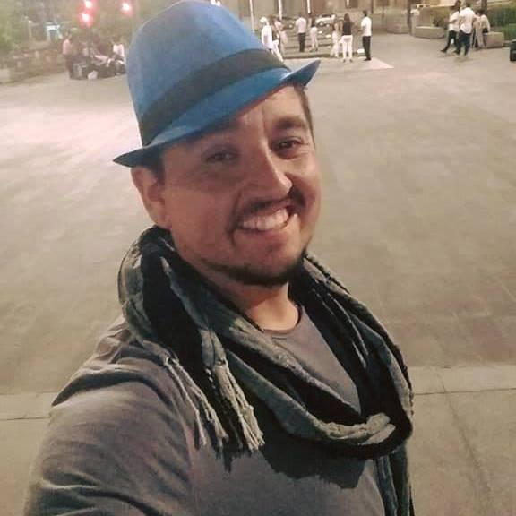

CV Online Carlos Silva
Alumno ingenieria en Informatica
Estudios
- Enseñanza Basica: completa
- Enseñanza Media: completa
- Tecnico en nivel medio Telecomunicaciones

Experiencia laboral
- 2018: Hospital Sotero del Rio
- Maestro Carpintero encargado de realizar reparaciones y manteciones de todos los sectores del hospital
- 2017-2018: socovesa, obra los bravos.
- maestro Carpintero obra gruesa.
- 2017: Posta central
- Maestro Carpintero encargado de realizar tabiqueria en sector nuevo de urgencias
Antecedentes Personales
- Nombre: Carlos Matias Silva Muñoz
- Rut: 16.577.787-5
- direccion: pasaje voltimetro #931, villa nevados del maipo
- Fecha de Nacimiento: 20 de junio 1989
- estado civil: Soltero
- comuna: Puente Alto
- correo electronico: carlosascii@hotmail.com